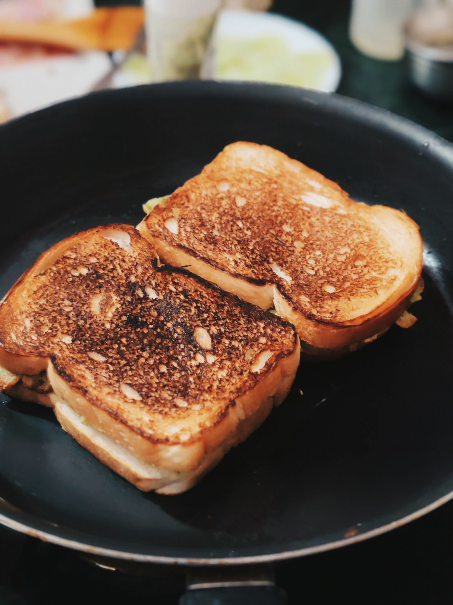

Grilled Cheese
Home

The modern grilled cheese sandwich originated in the United States during the 1920s when inexpensive sliced bread and processed cheese became widely available.
Originally known as a "toasted cheese" or "melted cheese" sandwich, it was served open-faced and gained massive popularity during the Great Depression as an affordable, filling meal.
By the 1960s, adding a second slice of bread became standard practice, creating the classic closed grilled cheese sandwich enjoyed today.
Ingredients
- Sliced white or sourdough bread 2 slices
- Butter (room temperature) 2 tbsp
- American or sharp cheddar cheese 2 slices
Instructions
- Butter one side of each slice of bread evenly from edge to edge.
- Place a skillet over medium-low heat. Lay one slice of bread in the pan, buttered side down.
- Place the cheese slices on top of the bread, then top with the second slice of bread, buttered side up.
- Cook for 3 to 4 minutes until the bottom slice is golden brown and crispy.
- Flip the sandwich carefully and cook for another 3 to 4 minutes until the second side is golden brown and the cheese is fully melted. Serve warm!